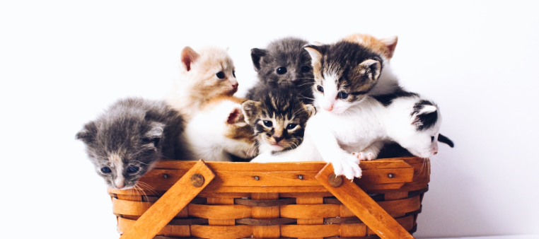

Artikel
Jenis Jenis Kucing Peliharaan


Sumber
https://www.99.co/blog/indonesia/jenis-kucing-terpopuler/
Tanggal
18 Juli 2021
https://www.99.co/blog/indonesia/jenis-kucing-terpopuler/
18 Juli 2021
Kucing adalah hewan yang lucu dan dapat dipelihara di rumah karena perawatannya yang tidak terlalu susah. Terdapat banyak sekali jenis kucing yang dapat dipelihara di rumah. Setiap jenis tentusaja memiliki keunikannya masing-masing. Berikut adakah jenis-jenis kucing yang dapat anda pelihara di rumah:
1. Kucing domestik
Kucing domestik lebih sering dikenal dengan kucing kampung. Kucing ini mudah di pelihara karena tidak memerlukan perawatan yang khusus. Kucing domestik sangat mudah ditemukan karena sering berkeliara di jalanan.
2. Kucing persia
Kucing persia menjadi jenis kucing yang paling banyak diminati untuk dipelihara. Kucing ini sangat menggemaskan karena hidungnya yang pesak. Karakteristik lainnya yang dimiliki diantaranya rambut yang lebar dan wajahnya yang bulat. Kucing persia membutuhkan perawatan yang cukup membutuhkan biaya lebih.
3. Kucing anggora
Kucing anggora menjadi salah satu jenis kucing yang banyak diminati. Bentuk fisiknya yang unuk dengan bulu yang penjang serta telinga yang lebar. Kucing anggora merupakan kucing domestik yang berasal dari Ankara, Turki.
4. Kucing sphynx
Kucing sphynx menjadi satu-satunya jenis kucing yang tidak memiliki bulu. Namun kenyataannnya kucing ini memiliki bulu tetapi sangat pendek. Akibat karakteristiknya yang unik, kucing ini membutuhkan perawatan yang khusus.
5. Kucing british shorthair
Kucing britis shorthair sangat menarik perhatian karena perwujudannya yang menggemaskan.Bulunya sangat halus dan terlihat padat. Banyak orang yang menyetakan bahwa karakteristik tubuhnya sempurna dan seimbang.
Itulah jenis-jenis kucing yang dapat anda pelihara di rumah. Setiap jenis kucng memiliki karakteristiknya masing-masing. Perlakuan perawatannya pun berbeda-beda. Anda perlu mengenali jenisnya sehingga dapat merawatnya dengan baik dan benar agar kucing selalu sehat dan dapat menemani aktivitas anda di rumah.
Hubungi sosial media kami jika ingin bergabung di organisasi ini atau ingin berdonasi